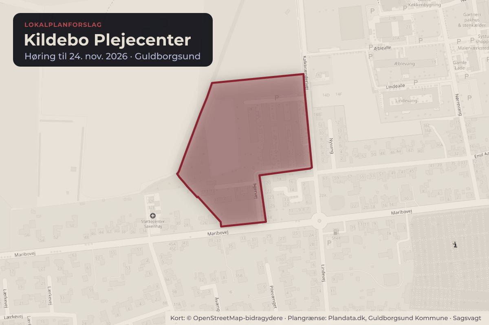
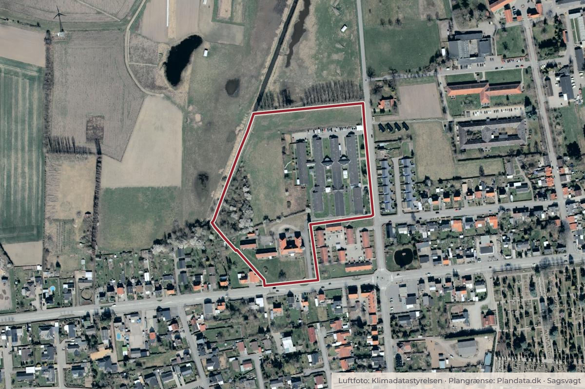

Besluttet 21. september, Teknik-, Natur- & Miljøudvalget, Guldborgsund
Forslag til Lokalplan 247 for Kildebo Plejecenter
Planlægningen for en udvidelse af plejehjemskapaciteten er påbegyndt, efter at Teknik, Klima og Miljøudvalget har igangsat sagen på møde 21. oktober 2025. Dette er en lokalplansag B, da der ikke er kommuneplantillæg.
Klima og grøntByggeri og lokalplanerÆldre og sundhed
Bydele i sagen: Sakskøbing

Kort: © OpenStreetMap-bidragydere. Plangrænse: Plandata.dk, Guldborgsund Kommune.

Kort fortalt
- Forslaget
- Godkende forslag til Lokalplan 247 Kildebo Plejecenter til udsendelse i 4 ugers offentlig høring
- Hvem
- Teknik-, Natur- & Miljøudvalget, Guldborgsund Kommune
- Hvornår
- Mandag 21. september 2026
- Status
- Besluttet. Godkendt. UDVALGTE.Beslutningen er forkortet her. Læs hele beslutningen
Læs hele sagen Kommunens egen tekst
Indstilling
Direktionen indstiller til Teknik-, Natur- & Miljøudvalget:
1. at godkende forslag til Lokalplan 247 Kildebo Plejecenter til udsendelse i 4 ugers offentlig høring
forventeligt fra uge 40.
Sagsfremstilling
Guldborgsund Kommune har i 2025 udarbejdet en masterplan for plejeboligstruktur i Guldborgsund
Kommune. I masterplanen udpeges det eksisterende Kildebo plejecenter som et hensigtsmæssigt sted at
udvide med flere boligenheder.
Guldborgsund Kommune har fået udarbejdet et projektforslag til arealerne nord og vest for det
eksisterende plejecenter. På baggrund af dette forslag udlægges der i lokalplanforslaget et byggefelt, der
også tager højde for hensyn til den eksisterende natur ud mod det åbne land.
Lokalplan skal overordnet sikre, at der kan etableres plejeboliger, der lever op til funktionskrav og
samtidigt at nybyggeri indpasses i det eksisterende område.
Med lokalplanen fastsættes blandt andet:
• at ny boliger kan sammenbygges med det eksisterende byggeri
• at maksimalt 45% af arealet bebygges
• at de nye plejeboliger maksimalt må være 2 etager og 12 meter i højden
• at ny bebyggelse opføres i materialer, der passer ind i området
• at værdifuld beplantning og beplantningsbælter bevares
• at ny bebyggelse sikres mod oversvømmelse
Lokalplanen giver dispensation fra skovbyggelinjen jf. naturbeskyttelseslovens § 17 til opførelse af
plejecenter ved vedtagelsen af denne lokalplan. Denne afgørelse kan påklages 4 uger fra offentliggørelse.
Planforslaget er i overensstemmelse med kommuneplanramme SAKS 01 og kræver ikke udarbejdelse af
kommuneplantillæg.
Lokalplanen har været igennem en screening for at vurdere om den vil påvirke miljøet. Screeningen har
viste at der ikke vil komme væsentlig påvirkning af miljøet, og der er derfor truffet afgørelse om at
lokalplanen ikke skal miljøvurderes efter lov om miljøvurdering af planer og programmer mm.
Sammenhæng til politiske strategier
Planforslaget er i overensstemmelse med masterplanen for plejeboligstruktur i Guldborgsund Kommune.
Økonomi
Sagen har ingen bevillingsmæssige konsekvenser.
HØRING
Planen sendes i 4 ugers offentlig høring i perioden d. 28. september 2026 til 26. oktober 2026. Der
afholdes ikke borgermøde i høringsperioden, da det er praksis i kommunen for mindre komplekse
lokalplaner, og da lokalplanen er en umiddelbar opfølgning på den allerede politisk godkendte masterplan
for plejeboligstruktur i Guldborgsund Kommune.
Beslutning
Fraværende: René Christensen (M) - Fravær grundet ferie
Godkendt.
UDVALGTE
Bilag
- Offentlig
- Kortbilag for Lokalplan 247 Kildebo plejecenter 17.08.2026
- Offentlig
- Miljøscreening for Lokalplan 247 Kildebo plejecenter 17.08.2026
- Offentlig
- Lokalplan 247 Kildebo plejecenter 21.08.2026
Kilde: Guldborgsund Kommune, Teknik-, Natur- & Miljøudvalget, referat fra mødet mandag 21. september 2026, punkt 2. Læs den originale sag hos kommunen.